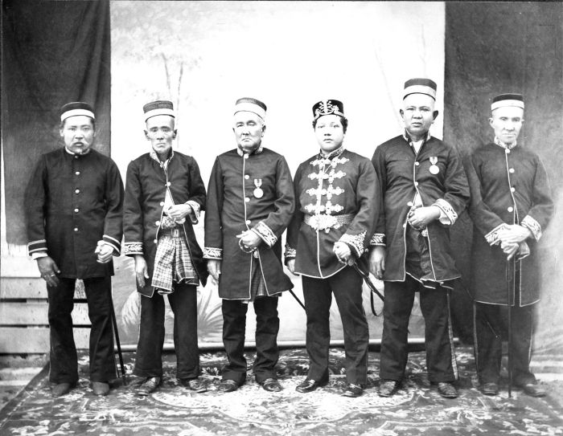

Sejarah
Masa Prasejarah
Riau diduga telah dihuni sejak masa antara 10.000-40.000 SM. Kesimpulan ini diambil setelah penemuan alat-alat dari zaman Pleistosin di daerah aliran sungai Sungai Sengingi di Kabupaten Kuantan Singingi pada bulan Agustus 2009. Alat batu yang ditemukan antara lain kapak penetak, perimbas, serut, serpih dan batu inti yang merupakan bahan dasar pembuatan alat serut dan serpih. Tim peneliti juga menemukan beberapa fosil kayu yang diprakirakan berusia lebih tua dari alat-alat batu itu. Diduga manusia pengguna alat-alat yang ditemukan di Riau adalah pithecanthropus erectus seperti yang pernah ditemukan di Sangiran, Jawa Tengah. Penemuan bukti ini membuktikan ada kehidupan lebih tua di Riau yang selama ini selalu mengacu pada penemuan Candi Muara Takus di Kampar sebagai titik awalnya.
Masa Prakolonial
Pada awal abad ke-16, Tome Pires, seorang penjelajah Portugal, mencatat dalam bukunya, Suma Oriental bahwa kota-kota di pesisir timur Sumatra antara suatu daerah yang disebutnya Arcat (sekitar Aru dan Rokan) hingga Jambi adalah pelabuhan dagang yang dikuasai oleh raja-raja dari Minangkabau. Di wilayah tersebut, para pedagang Minangkabau mendirikan kampung-kampung perdagangan di sepanjang Sungai Siak, Kampar, Rokan, dan Indragiri, dan penduduk lokal mendirikan kerajaan-kerajaan semiotonom yang diberi kebebasan untuk mengatur urusan dalam negerinya, tetapi diwajibkan untuk membayar upeti kepada para raja Minangkabau. Satu dari sekian banyak kampung yang terkenal adalah Senapelan yang kemudian berkembang menjadi Pekanbaru, yang kini menjadi ibu kota provinsi.
Sejarah Riau pada masa pra-kolonial didominasi beberapa kerajaan otonom yang menguasai berbagai wilayah di Riau. Kerajaan yang terawal, Kerajaan Keritang, diduga telah muncul pada abad keenam, dengan wilayah kekuasaan diperkirakan terletak di Keritang, Indragiri Hilir. Kerajaan ini pernah menjadi wilayah taklukan Majapahit, namun seiring masukkan ajaran Islam, kerajaan tersebut dikuasai pula oleh Kesultanan Melaka. Selain kerajaan ini, terdapat pula Kerajaan Kemuning, Kerajaan Batin Enam Suku, dan Kerajaan Indragiri, semuanya diduga berpusat di Indragiri Hilir.
Masa Kerajaan Melayu
-
Kesultanan Indragiri

Kesultanan Indragiri didirikan pada tahun 1298 oleh Raja Merlang I, yang uniknya tidak berkedudukan di Indragiri, melainkan di Melaka. Urusan pemerintahan diserahkan pada para pembesar tradisional. Baru pada masa kekuasaan Narasinga II sekitar tahun 1473, para raja Indragiri mulai menetap di pusat pemerintahannya di Kota Tua. Pada tahun 1815, di bawah Sultan Ibrahim, ibu kota kerajaan dipindahkan ke Rengat, yang kini menjadi ibu kota Kabupaten Indragiri Hulu. Pada masa inilah Belanda mulai campur tangan dengan urusan internal Indragiri, termasuk dengan mengangkat seorang Sultan Muda yang berkedudukan di Peranap. Dengan adanya traktat perdamaian dan persahabatan yang ditandatangani pada tanggal 27 September 1938 antara Indragiri dengan Belanda, maka Kesultanan Indragiri menjadi zelfbestuur lindungan Belanda, dipimpin seorang controleur yang memegang wewenang mutlak terhadap kekuasaan lokal.
-
Kesultanan Siak
Kesultanan Siak Sri Inderapura didirikan oleh Raja Kecil dari Pagaruyung pada tahun 1723. Siak segera saja menjadi sebuah kekuatan besar yang dominan di wilayah Riau: atas perintah Raja Kecil, Siak menaklukkan Rokan pada 1726 dan membangun pangkalan armada laut di Pulau Bintan. Namun keagresifan Raja Kecil ini segera ditandingi oleh orang-orang Bugis pimpinan Yang Dipertuan Muda dan Raja Sulaiman. Raja Kecil terpaksa melepaskan pengaruhnya untuk menyatukan kepulauan-kepulauan di lepas pantai timur Sumatra di bawah bendera Siak, meskipun antara tahun 1740 hingga 1745 ia bangkit kembali dan menaklukkan beberapa kawasan di Semenanjung Malaya.
Pada akhir abad ke-18, Siak telah menjelma menjadi kekuatan yang dominan di pesisir timur Sumatra. Pada tahun 1761, Sultan Abdul Jalil Syah III mengikat perjanjian eksklusif dengan Belanda, dalam urusan dagang dan hak atas kedaulatan wilayahnya, serta bantuan dalam bidang persenjataan. Walau kemudian muncul dualisme kepemimpinan di dalam tubuh kesultanan yang awalnya tanpa ada pertentangan di antara mereka, Raja Muhammad Ali, yang lebih disukai Belanda, kemudian menjadi penguasa Siak, sementara sepupunya Raja Ismail, tidak disukai oleh Belanda, muncul sebagai Raja Laut, menguasai perairan timur Sumatra sampai ke Laut Cina Selatan, membangun kekuatan di gugusan Pulau Tujuh. Tahun 1780, Siak menaklukkan daerah Langkat, termasuk wilayah Deli dan Serdang. Di bawah ikatan perjanjian kerjasama mereka dengan VOC, pada tahun 1784 Siak membantu tentara Belanda menyerang dan menundukkan Selangor, dan sebelumnya mereka telah bekerjasama memadamkan pemberontakan Raja Haji Fisabilillah di Pulau Penyengat.
Masa Kolonial Belanda

Invasi Belanda yang agresif ke pantai timur Sumatra tidak dapat dihadang oleh Siak. Belanda mempersempit wilayah kedaulatan Siak, dengan mendirikan Keresidenan Riau (Residentie Riouw) di bawah pemerintahan Hindia Belanda yang berkedudukan di Tanjung Pinang. Para sultan Siak tidak dapat berbuat apa-apa karena mereka telah terikat perjanjian dengan Belanda. Kedudukan Siak semakin melemah dengan adanya tarik-ulur antara Belanda dan Inggris yang kala itu menguasai Selat Melaka, untuk mendapatkan wilayah-wilayah strategis di pantai timur Sumatra. Para sultan Siak saat itu terpaksa menyerah kepada kehendak Belanda dan menandatangani perjanjian pada Juli 1873 yang menyerahkan Bengkalis kepada Belanda, dan mulai saat itu, wilayah-wilayah yang sebelumnya menjadi kekuasaan Siak satu demi satu berpindah tangan kepada Belanda. Pada masa yang hampir bersamaan, Indragiri juga mulai dipengaruhi oleh Belanda, namun akhirnya baru benar-benar berada di bawah kekuasaan Batavia pada tahun 1938. Penguasaan Belanda atas Siak kelak menjadi awal pecahnya Perang Aceh. Di pesisir, Belanda bergerak cepat menghapuskan kerajaan-kerajaan yang masih belum tunduk. Belanda menunjuk seorang residen di Tanjung Pinang untuk mengawasi daerah-daerah pesisir, dan Belanda berhasil memakzulkan Sultan Riau-Lingga, Sultan Abdul Rahman Muazzam Syah pada Februari 1911.
Pendudukan Jepang
Pada masa pendudukan Jepang di Indonesia, Riau menjadi salah satu sasaran utama untuk diduduki. Bala tentara Jepang menduduki Rengat pada 31 Maret 1942. Seluruh Riau dengan cepat tunduk di bawah pemerintahan Jepang. Salah satu peninggalan masa pendudukan Jepang adalah jalur kereta api sepanjang 220 km yang menghubungkan Muaro Sijunjung dan Pekanbaru yang terbengkalai. Ratusan ribu rakyat Riau dipaksa bekerja oleh tentara Jepang untuk menyelesaikan proyek ini.
Era Kemerdekaan
-
Revolusi Nasional dan Orde Lama
Pada awal kemerdekaan Indonesia, bekas wilayah Keresidenan Riau dilebur dan tergabung dalam Provinsi Sumatra yang berpusat di Medan. Seiring dengan penumpasan simpatisan Pemerintahan Revolusioner Republik Indonesia (PRRI), Provinsi Sumatra dimekarkan lagi menjadi tiga provinsi, yakni Sumatra Utara, Sumatra Tengah, dan Sumatra Selatan. Ketika itu, Sumatra Tengah menjadi basis terkuat dari PRRI, situasi ini menyebabkan pemerintah pusat membuat strategi memecah Sumatra Tengah dengan tujuan untuk melemahkan pergerakan PRRI. Selanjutnya pada tahun 1957, berdasarkan Undang-Undang Darurat Nomor 19 tahun 1957, Sumatra Tengah dimekarkan menjadi tiga provinsi yaitu Riau, Jambi dan Sumatra Barat. Kemudian yang menjadi wilayah Provinsi Riau yang baru terbentuk adalah bekas wilayah Kesultanan Siak Sri Inderapura dan Keresidenan Riau serta ditambah Kampar.
Riau sempat menjadi salah satu daerah yang terpengaruh Pemerintahan Revolusioner Republik Indonesia pada akhir 1950-an. Pemerintah pusat menggelar Operasi Tegas dibawah pimpinan Kaharuddin Nasution, yang kelak menjadi gubernur provinsi ini, dan berhasil menumpas sisa-sisa simpatisan PRRI. Setelah situasi keamanan berangsur pulih, pemerintah pusat mulai mempertimbangkan untuk memindahkan ibu kota provinsi dari Tanjung Pinang ke Pekanbaru, yang secara geografis terletak di tengah-tengah. Pemerintah akhirnya menetapkan Pekanbaru sebagai ibu kota provinsi yang baru pada 20 Januari 1959 lewat Kepmendagri No. Desember 52/I/44-25.
-
Masa Orde Baru
Setelah jatuhnya Orde Lama, Riau menjadi salah satu tonggak pembangunan ekonomi Orde Baru yang kembali menggeliat. Pada tahun 1944, ahli geologi NPPM, Richard H. Hopper dan Toru Oki bersama timnya menemukan sumur minyak terbesar di Asia Tenggara yaitu di Minas, Siak. Sumur ini awalnya bernama Minas No. 1. Minas terkenal dengan jenis minyak Sumatra Light Crude (SLC) yang baik dan memiliki kadar belerang rendah. Pada masa awal 1950-an, sumur-sumur minyak baru ditemukan di Minas, Duri, Bengkalis, Pantaicermin, dan Petapahan. Eksploitasi minyak bumi di Riau dimulai di Blok Siak pada September 1963, dengan ditandatanganinya kontrak karya dengan PT California Texas Indonesia (kini menjadi Chevron Pacific Indonesia). Provinsi ini sempat diandalkan sebagai penyumbang 70 persen dari produksi minyak nasional pada tahun 1970-an. Riau juga menjadi tujuan utama program transmigrasi yang dicanangkan oleh pemerintahan Soeharto. Banyak keluarga dari Pulau Jawa yang pindah ke perkebunan-perkebunan kelapa sawit yang baru dibuka di Riau, sehingga membentuk suatu komunitas tersendiri yang kini berjumlah cukup signifikan.
-
Era Reformasi
Pada tahun 1999, Saleh Djasit terpilih menjadi putra daerah asli Riau kedua (selain Arifin Achmad) dan pertama dipilih oleh DPRD Provinsi sebagai gubernur. Pada tahun 2003, mantan Bupati Indragiri Hilir, Rusli Zainal, terpilih menjadi gubernur, dan terpilih kembali lewat pemilihan langsung oleh rakyat pada tahun 2008. Mulai tanggal 19 Februari 2014, Provinsi Riau secara resmi dipimpin oleh gubernur, Annas Maamun. Baru memimpin 7 Bulan, Annas Maamun dilengserkan setelah Komisi Pemberantasan Korupsi (KPK) Menangkap Tangan Annas Maamun dalam kasus Alih Fungsi Lahan di Kabupaten Kuansing. Saat ini provinsi Riau dipimpin oleh Arsyadjuliandi Rachman (Andi Rachman). Setelah kejatuhan Orde Baru, Riau menjadi salah satu sasaran provinsi yang akan dimekarkan. Pada tahun 2002, pemerintah menetapkan pemekaran Kepulauan Riau yang beribu kota di Tanjung Pinang, dari provinsi Riau.